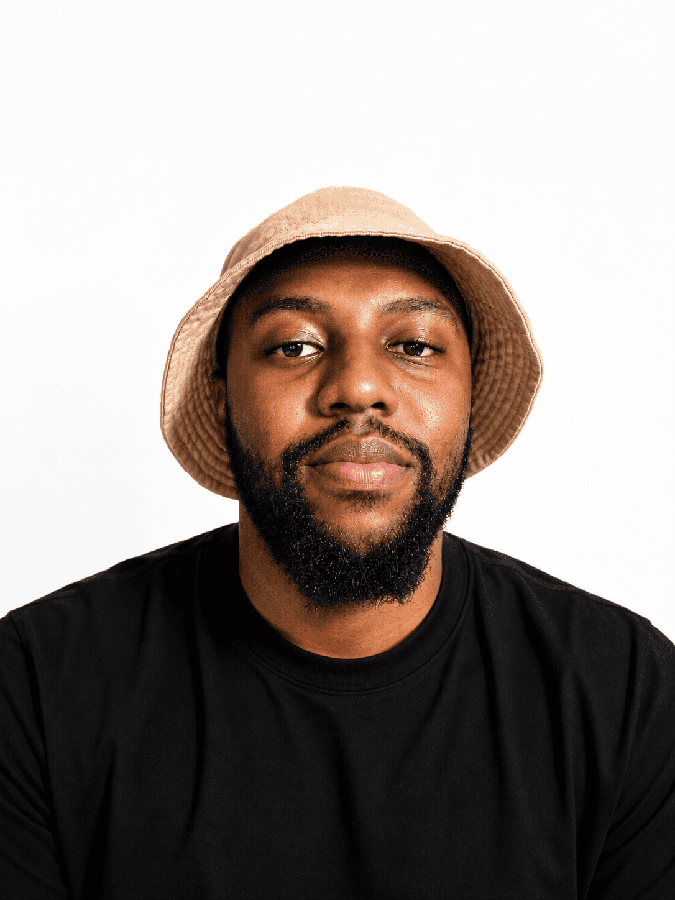

Strategy before aesthetics.
Beautiful design that doesn't communicate the right thing is decoration. Every project starts with the why — the business, the audience, the brief — before a single visual decision is made.

I grew up in Durban watching my mother rearrange furniture at 2am, convinced a different layout would change the feeling of the room. She was right. That obsession with how space communicates feeling became the foundation of everything I do.
"I don't design logos. I design the first impression a brand will ever make."
I'm a results-driven graphic and web designer with 7+ years of experience delivering high-impact brand identities, digital campaigns, marketing collateral and responsive websites for South African SMEs and lifestyle brands.
I studied at Central Johannesburg TVET College, where I earned my Diploma in Art & Design, and later completed a Certificate in Web Design & Development at the University of Cape Town — sharpening the front-end craft so design and build stay under one roof.
In 2017 I founded Freelance, a full-service creative studio, and have since delivered branding, packaging and digital work to over 30 clients. I've also worked in-house as a Creative Designer at Lime Design Agency on finance and real-estate brands, and co-founded KlevaBari Apparel — where I lead the identity, packaging and e-commerce build end-to-end.
My work sits at the intersection of visual communication, brand strategy, UX/UI and front-end build. Every project is managed from concept to execution, with brand consistency held tight across print, web and social.
These aren't rules — they're instincts refined by 7+ years of client work, running Digital Pen Media and co-building KlevaBari. The shortlist that keeps the work honest.
Beautiful design that doesn't communicate the right thing is decoration. Every project starts with the why — the business, the audience, the brief — before a single visual decision is made.
A brand identity that behaves the same across print, web and social is a brand people believe in. My work lives in systems, not one-off assets.
Concept and code sit on the same desk. Designing in Figma and building in HTML, CSS, JavaScript, React and WordPress keeps the intent intact from idea to launch.
The best work comes from clear briefs, honest feedback and a partnership that respects both the strategy and the deadline.
Working with South African SMEs and lifestyle brands means designing from inside the culture — not imitating a Western template of what premium looks like.
End-to-end brand systems — logo, typography, colour, packaging and guidelines built to hold up across every touchpoint.
Responsive websites, e-commerce stores and interfaces designed in Figma and Adobe XD, then built to launch.
Leading the visual direction of campaigns, launches and content programmes from concept through to final production.
Hands-on build in HTML5, CSS3, JavaScript, React, WordPress and Elementor — designs shipped exactly the way they were drawn.
Print-ready packaging, marketing collateral and file preparation for FMCG, apparel and lifestyle brands.
Social media graphics, digital ads and content series designed to lift engagement and online visibility.
Founded and lead a full-service creative studio delivering branding, packaging, marketing collateral and digital solutions to over 30 SMEs and lifestyle brands. Full ownership of the work — from briefing and concept through production, build and delivery — across print, web and social.
Designed corporate branding systems and visual identities for finance and real estate clients. Produced digital layouts, social media graphics and marketing materials in a fast-paced agency environment, preparing print-ready and web-optimised files for production.
Developed the complete brand identity — logo, typography, packaging and visual system — for a Soweto-born apparel label. Built and manage the e-commerce store and lead digital marketing campaigns driving awareness and online sales.
Contributed to branding materials, campaign visuals and visual storytelling content for community initiatives. Supported nonprofit design projects across digital and print in collaboration with a small creative team.
Five-year foundation in art and design — drawing, typography, layout and visual communication — that shaped the discipline behind the practice today.
Sharpened the front-end craft — responsive layouts, HTML5, CSS3, JavaScript and modern web workflows — to keep design and build under one roof.
Reach out directly to discuss your project. I take on a limited number of projects each quarter to ensure every client receives my full focus.